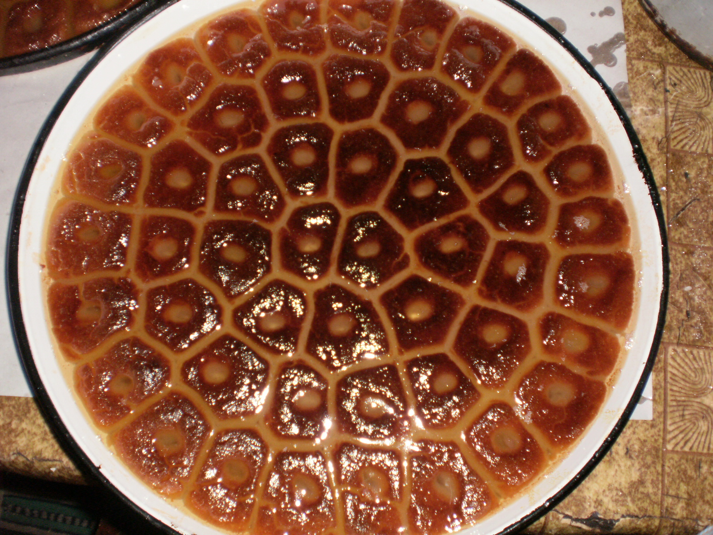
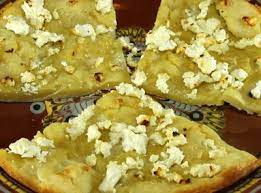
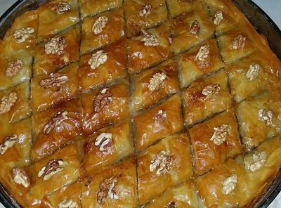
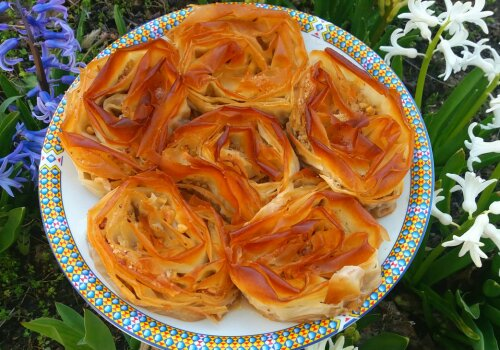
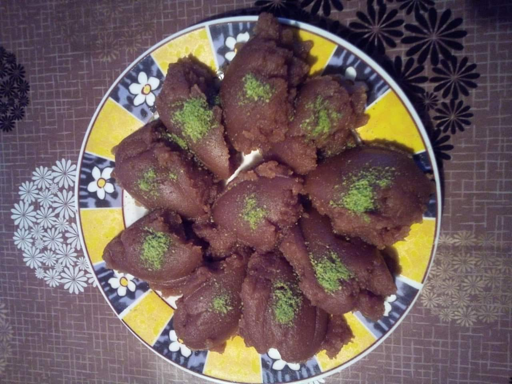
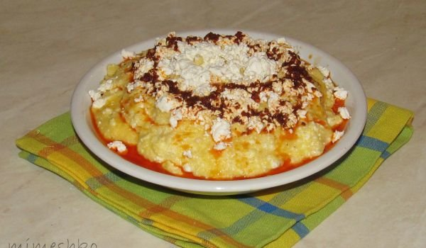

Грагалета - продукти: За тестото: бяло брашно, грис, краве масло, олио, прясно мляко, захар, вода. За сиропа: вода, захар. Начин на приготвяне: Бялото брашно и грисът се смесват. В дълбока тенджера се загрява олиото. Когато е готово, към него се добавят прясното мляко, водата и захарта. Постепенно се прибавят брашното и грисът, като се разбърква добре. Бъркането продължава, докато се сгъсти и стане хомогенна смес, която да може лесно да се отделя от съда. Оформят се средни по големина топчета и се слагат в тава, дъното, на която е покрито с краве масло и брашно. Подреждат се и се притискат с длан. Изпича се до златисто. Сиропът се сварява и с него се заливат изпечените грагалета, докато са още топли и двата компонента.
Шупла - продукти: Брашно, 2 яйца, 500 г кисело мляко, извара, сол, олио, сода бикарбонат. Начин на приготвяне: Яйцата се разбиват добре и към тях се прибавят киселото мляко, содата, изварата и малко сол на вкус. С приготвената смес и с брашното се замесва меко тесто, което се изсипва в намаслена предварително тавичка. Пече се на умерена температура до пълна готовност.
Баклава - продукти: ЗА СИРОПА захар - 1 кг. вода - 1 л. ванилия - 2 бр. ЗА БАКЛАВАТА кори - 1 пакет точени (500 г), за баница (Фамилия) орехи - 2 ч.ч. смлени грис - 1 ч.ч. пшеничен масло - 150 г краве олио - 1 с.л.
Сарайлия - продукти: кори за баница - 1 пакет фини (400 г) орехи - 1 ч.ч. ситно натрошени кафява захар - 1 ч.ч. кристална грис - ½ ч.ч. пшеничен шарлан - за поръсване (слънчогледово масло). ЗА ШЕРБЕТ кафява захар - 1 ч.ч. кристална вода - 2 ч.ч. (по 250 мл) ванилия - 1 пакетче.
Сиропирани охлюви с мая - продукти: суха мая - 1 пакет от 7 г захар - 1 с.л. яйца - 1 бр. сол - 1 щипка прясно мляко - 160 мл ванилия - 1 бр. брашно - 450 г орехи - 1 ч.ч. (смлени). СИРОП захар - 2 ч.ч. вода - 3 ч.ч. олио - 60 мл за намазване.

Халва - продукти: 1,5 чаена чаша олио, 3 чаши брашно - препържва се до светло кафяво. Прави се сироп от 1 чаша захар,1 чаша вода и половин чаша прясно мляко. По желание се добавят ядки и стафиди.
Картофи на метене: Картофите се сваряват. Като изстинат се режат на кубчета. Прави се запръжка от праз, олио, малко масло, червен пипер, прибавят се картофите за около минута - две и яденето е готово.

Качамак - продукти: царевично брашно - 400 г масло - 60 г олио - 1 с.л. прясно мляко - 200 мл. сирене - 200 г сол - на вкус червен пипер - 1 ч.л.
